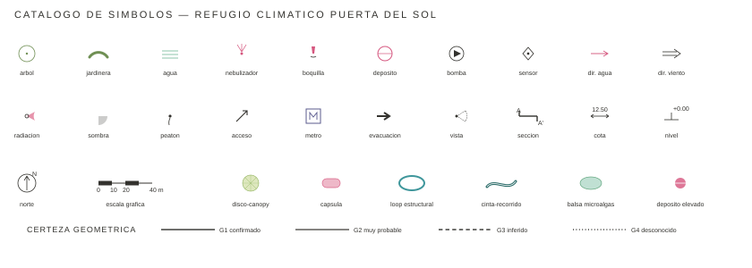

Madrid · 07-2026 · documento 02 · toda la documentación posterior obedece a este manual
02 · MANUAL GRÁFICO · 01
01 · Identidad
De dónde nace este lenguaje
Todo el sistema gráfico deriva del propio proyecto: del dibujo matriz 00_DIBUJO 03 (tinta y acuarela, 07-2026) y de sus mutaciones — maquetas de acrílico translúcido, redes tensadas, hinchables rosa chicle, balsas de microalgas, cobre y líneas filiformes. La documentación técnica debe parecer inevitablemente de este proyecto: rigurosa como un plano institucional, delicada como la maqueta transparente fotografiada en cenital.
El lenguaje se sitúa a medio camino entre: A plano institucional preciso · B dibujo técnico experimental · C maqueta transparente cenital · D diagrama de sistemas ambientales · E atlas botánico/biológico · F cartografía de concurso europeo.
Principios
1 · Fidelidad al proyecto 2 · Coherencia geométrica 3 · Arquitectura real y dibujable 4 · Información 5 · Legibilidad 6 · Sistema 7 · Belleza. Nunca se sacrifica 1–5 para que una lámina quede espectacular: el resultado es bello porque está bien construido, jerarquizado y dibujado.
Materia del proyecto (familias)
Loops estructurales · cinta-recorrido · discos-canopy de microalgas · cápsulas neumáticas · depósitos de agua · red hidráulica vista · balsas y estanques · jardineras-banco · mástiles ramificados · vegetación · nebulización · lámina de agua jugable.
Lo que este manual prohíbe
Diagramas corporativos y estética de consultora · plantillas PowerPoint · iconos genéricos de stock · colores saturados arbitrarios · degradados tecnológicos azules · infografía comercial · panel de Pinterest · sombras portadas/3D gratuitas · rellenos negros masivos · más de dos familias tipográficas · llenar la página porque hay espacio: el aire es parte del sistema.
02 · MANUAL GRÁFICO · 02
02 · Color
Paleta — extraída de las referencias, no elegida
Muestra
Rol
HEX
RGB
CMYK aprox.
Uso
Opacidad
Anclaje en referencia
BLANCO BASE
#FFFFFF
255·255·255
0/0/0/0
fondo, espacio, vacío
—
fondo común de todas las referencias
GRIS PIEDRA
#EDEAE4
237·234·228
0/1/4/7
relleno contexto edificado
100 %
granito de plaza #C7B6AB aclarado (0F53E6F0)
GRIS CONTEXTO
#B5B1A9
181·177·169
0/2/7/29
línea de lo existente
100 %
k-means global #AFADA3 / #999991
GRIS TÉCNICO
#33322E
51·50·46
0/2/10/80
texto, cotas, datos
100 %
oscuros #252317/#423F2E neutralizados
TURQUESA ESTRUCTURA
#3E969B
62·150·155
60/3/0/39
loops, estructura primaria
95 %
muestreo directo membrana/pista HR01
TURQUESA PROFUNDO
#2E6E6B
46·110·107
58/0/3/57
cinta-recorrido, énfasis
100 %
acento pista #336D70 (HR01)
VERDE LIMA
#C3D48A
195·212·138
8/0/35/17
discos-canopy, verde elevado
55 %
dibujo #B3C1A8 + balsa HR01 #97963C
VERDE AGUA
#8FC7AE
143·199·174
28/0/13/22
balsas, estanques, agua viva
55 %
dibujo #89A68E + acrílico HR02
VERDE VEGETAL
#6F8F53
111·143·83
22/0/42/44
arbolado, vegetación en suelo
85 %
HR01 #4E502D · dosel real #A4A873
VERDE MICROALGAS
#6E7A45
110·122·69
10/0/43/52
láminas de cultivo profundas
70 %
balsa real #7E7C52/#998A34 (0F53E6F0)
ROSA CHICLE
#E794AC
231·148·172
0/36/26/9
cápsulas, hinchables, programa
65 %
cápsulas HR01 #E59FA9 · HR11 #D393A6
ROSA INTENSO
#D6577F
214·87·127
0/59/41/16
red hidráulica, depósitos, datos clave
90 %
acento saturado HR01 #E53763 rebajado
COBRE
#B08968
176·137·104
0/22/41/31
madera, bancos, uniones
90 %
k-means #88774E + disco real #BB9B6B
Regla: máximo un acento saturado dominante por lámina (rosa intenso o turquesa profundo). El resto trabaja en capas translúcidas. CMYK orientativo: verificar en preimpresión.
02 · MANUAL GRÁFICO · 03
03 · Línea
Jerarquía de grosores y certeza geométrica
Grosores (impreso A1 · 1:500)
mm
Uso
Especimen
0.08
tramas, contexto lejano, cables y tensores
0.10
información secundaria, vegetación menuda
0.13
componentes: discos, cápsulas, jardineras
0.18
geometría general de propuesta
0.25
estructura principal: loops, anillos
0.35
cinta-recorrido, elementos seccionados
0.50
cortes estructurales de primer orden, marco
Escalado: A1 ×1.0 · A2 ×0.85 · A3 ×0.7 · pantalla: 1 mm ≈ 3.78 px a 96 dpi. El master SVG trabaja en metros: a 1:500 sobre A1, 1 m = 2 mm de papel; los grosores de este manual ya están definidos en unidades de papel y se convierten al exportar.
Certeza geométrica (obligatorio en toda lámina)
Clase
Significado
Grafismo
G1
confirmado en varias referencias
G2
muy probable, coherente entre imágenes
G3
inferido, necesario para completar
G4
desconocido / reserva de categoría
La clase de certeza nunca se oculta: un plano bello con geometría inventada silenciosamente es un plano falso. G3/G4 pueden agruparse en leyenda («elementos inferidos») cuando granularlos ensucie la lámina.
Reglas de dibujo
Curvas siempre continuas y tensas (sin polilíneas facetadas visibles) · los loops nunca se interrumpen: pasan por encima/debajo con puente de opacidad · norte SIEMPRE arriba en plantas · lo existente nunca compite en peso con lo propuesto · cada familia conserva su color en TODA la colección.
02 · MANUAL GRÁFICO · 04
04 · Tipografía
Sistema tipográfico
Rol
Fuente
Cuerpo/interlínea
Especimen
Título principal
Bahnschrift SemiBold
28–40 pt · track +1 %
REFUGIO CLIMÁTICO
Título de plano
Bahnschrift Light, versal
14–18 pt · track +6 %
PLANTA GENERAL 1:500
Subtítulo
Bahnschrift Light
10–12 pt · track +3 %
Sistema de agua y sombra
Texto corrido
Arial Regular
8.5 / 12 pt
El dosel filtra la radiación mediante láminas de cultivo.
Anotación
Arial Regular
7 / 9.5 pt
jardinera-banco de borde curvo
Dato numérico
Bahnschrift Regular
9–11 pt tabular
2.450.000 L/año · 10.957 m²
Cota
Consolas
6.5 pt
12.50 +4.80 Ø6.00
Leyenda
Arial Regular
7.5 / 10 pt
■ balsa de microalgas ● árbol existente
Equivalencias libres (si el documento sale del entorno Windows): Bahnschrift → Archivo / Inter · Arial → Inter / Helvetica · Consolas → IBM Plex Mono. Nunca más de estas dos familias + mono por lámina.
Reglas
Los títulos no gritan: el protagonista es el dibujo. Texto siempre en gris técnico #33322E, nunca negro puro salvo impresión 1-tinta. Los números clave del proyecto (agua, superficie, temperatura) pueden usar ROSA INTENSO como única excepción de color tipográfico. Sin cursivas ornamentales; la cursiva solo para citas de fuentes. Rótulos en planta: horizontales o siguiendo la curva de la familia (nunca inclinaciones arbitrarias). Idioma: castellano; unidades SI con punto de millar (10.957 m²).
Micro-composición
Kicker en versalitas espaciadas turquesa profundo sobre cada bloque · numeración de lámina abajo-derecha 7 pt · créditos y fecha abajo-izquierda 7.5 pt · llamadas con línea fina 0.10 y punto de 0.8 mm, texto siempre fuera de la mancha del dibujo.
02 · MANUAL GRÁFICO · 05
05 · Tramas y transparencias
Cómo se representa cada sistema
Sistema
Especimen
Regla
Vegetación
campo de puntos en 3 densidades (baja/media/alta); copas de árbol como círculo 0.13 sin relleno + punto central
Agua
rayado horizontal fino 0.10 a 1.2 mm + relleno VERDE AGUA 45–55 %; lámina jugable con borde punteado
Sombra proyectada
campo gris 10–14 % SIN borde; nunca negro al 30 %
Radiación / temperatura
gradaciones controladas del ROSA INTENSO (nunca arcoíris); isolíneas 0.10 con valor
Existente
gris piedra + línea gris contexto; jamás color de familia
Propuesto elevado
relleno translúcido 50–65 % si es superficie; proyección de lo que vuela: discontinua 2.2/1.6
Tensores / cables
0.08 continua gris técnico; en haces radiales desde mástil
Instalaciones / red rosa
ROSA INTENSO 0.13–0.25 con nodos-punto (boquillas, goteros); reserva Fase 02: bombeo/drenaje/sensores
Área de influencia
halo del color de familia 8–12 % + borde discontinuo fino
Dato cuantitativo espacial
círculos proporcionales rosa + cifra Bahnschrift; nunca 3D ni iconos
Principio: capas translúcidas superpuestas — como el acrílico de las maquetas. El blanco del papel atraviesa todo; si una zona se ennegrece, sobran capas, no falta color.
02 · MANUAL GRÁFICO · 06
06 · Simbología
Catálogo de símbolos

Archivo editable: 02_SISTEMA_GRAFICO/simbolos/simbolos.svg. Los símbolos se dibujan a línea (0.10–0.13), sin rellenos negros salvo evacuación. Tamaño mínimo impreso 2.5 mm. No se admite iconografía externa.
02 · MANUAL GRÁFICO · 07
07 · Lámina
Retícula editorial
Especificación A1 apaisado (594×841)
Márgenes 20 mm perimetrales · campo de dibujo ≈ 610×554 mm a la izquierda · columna técnica derecha de 150 mm separada por filete 0.10 · en la columna, de arriba a abajo: kicker de fase, título del plano (versal Bahnschrift Light), subtítulo, leyenda, datos clave, diagrama secundario opcional, norte + escala gráfica, créditos · numeración P.XX abajo-derecha · el plano NUNCA invade la columna; el aire de la columna no se rellena.
Formatos
Principal: A1 apaisado (concurso/ayuntamiento) · reducción directa a A3 para memoria (grosores ×0.7) · pantalla: misma lámina exportada a 150 dpi. Serie: P.01, P.02… (planos) · D.01… (diagramas) · S.01… (secciones).
□ norte arriba y escala gráfica presentes
□ existente en grises / propuesta en familias
□ certezas G1–G4 aplicadas y honestas
□ un solo acento saturado dominante
□ transparencias suman, no ennegrecen
□ textos fuera de la mancha del dibujo
□ monumentos y claros respetados
□ leyenda completa, símbolos del catálogo
□ misma paleta/tipografía que el resto de la colección
□ ¿parece inevitablemente de ESTE proyecto?
02 · MANUAL GRÁFICO · 09
09 · Trazabilidad
Fuentes del sistema y archivos
Base geométrica
01_BASE_GEOMETRICA/planta_maestra/geometria_maestra.json — fuente de verdad (1 u = 1 m)
01_BASE_GEOMETRICA/planta_maestra/planta_maestra.svg — master por capas
01_BASE_GEOMETRICA/planta_maestra/master_geometry.py — generador paramétrico
01_BASE_GEOMETRICA/planta_maestra/contexto_sol.json — contexto OSM real proyectado
01_BASE_GEOMETRICA/modelo_3d/refugio_fase01.obj — 3D esquemático por familias (Z arriba)
01_BASE_GEOMETRICA/validacion/ — overlays y panel de composición